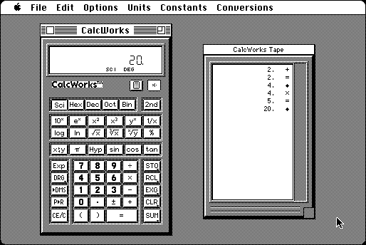

Download
CalcWorks.zip (238K) CalcWorks 1.7.8 repackaged into a zipped hfs disk image and checksum file. The disk image can be mounted with Mini vMac.
CalcWorks.hqx (307K) CalcWorks 1.7.8 in the original format.
copyright: John Brochu
mod date: Nov 8, 2001
license: shareware
last known url
(gone)
"Full-featured replacement for Apple's standard Calculator DA." Includes about anything imaginable for a conventional calculator, such as scientific functions, binary math, "paper tape" window, and RPN mode. For "System 6.0.5 up to and including OS 9.1".

If you find these downloads useful, please consider helping the Gryphel Project, which hosts them.
Here are the md5 checksums for the downloads, signed with Gryphel Key 5:
--------- GRY SIGNED TEXT --------- ae34dd5e1f05fb501a37fec3bdeb7411 CalcWorks.zip 1417b1a065822003c1ff35e3662e8b61 CalcWorks.hqx ------- BEGIN GRY SIGNATURE ------- Gry/4Xa8CFcUzxdN/O19SNTXb+mlSXly32HJPWd6whkNOxoKH5A7e5vZndfv8TLN KY7WVl8ZHwFhVaHZLc2ZUVHYKg9xiTAYsjNFYnCJTNBK7b/JhP+h/dQH5KPd7zhS AlRw7IQ2RHmG43EbhSK94v09Krtl05/DAqBHcPVeIFlDfk6NMdwQtsCpOX6EzmrX -------- END GRY SIGNATURE --------